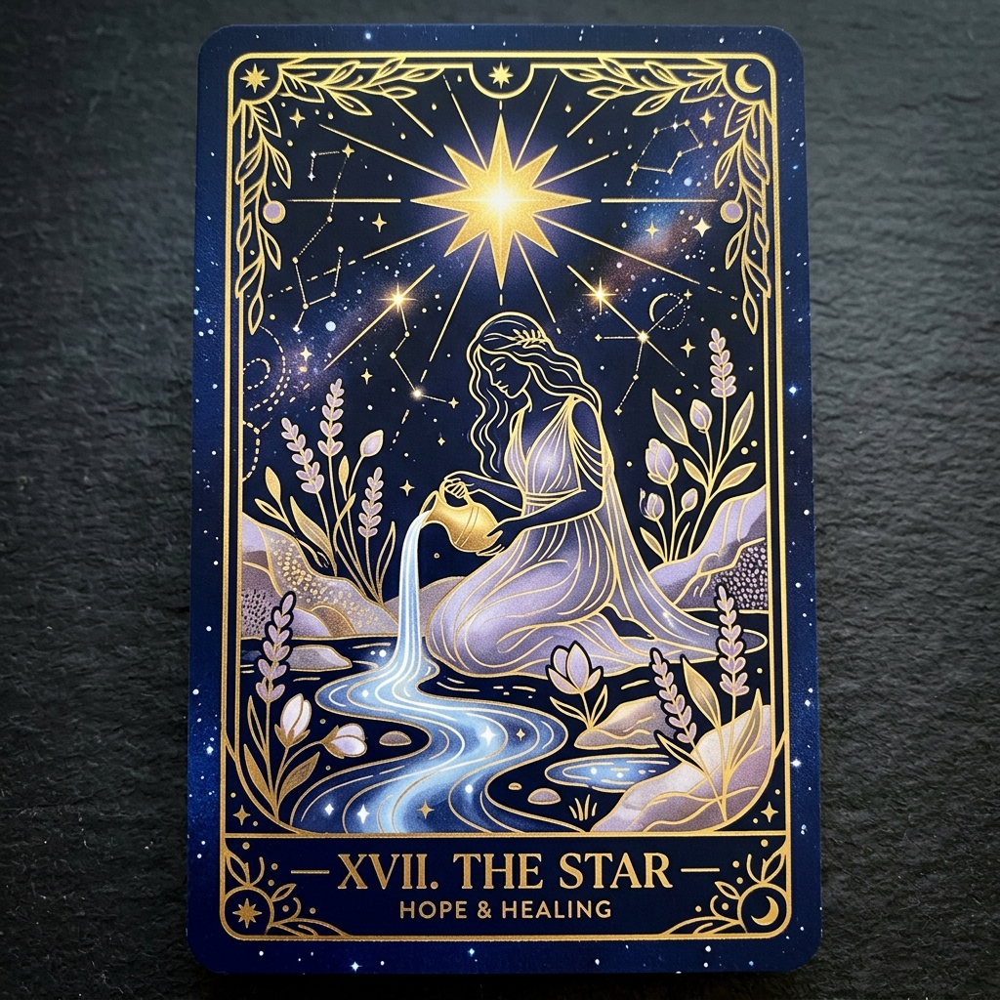
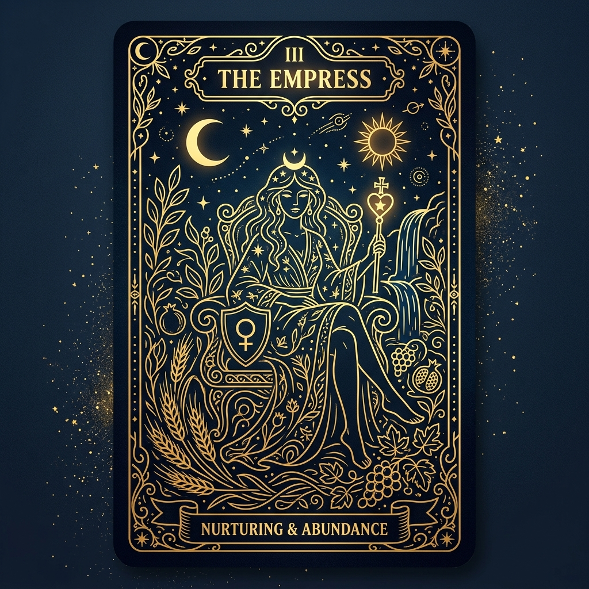
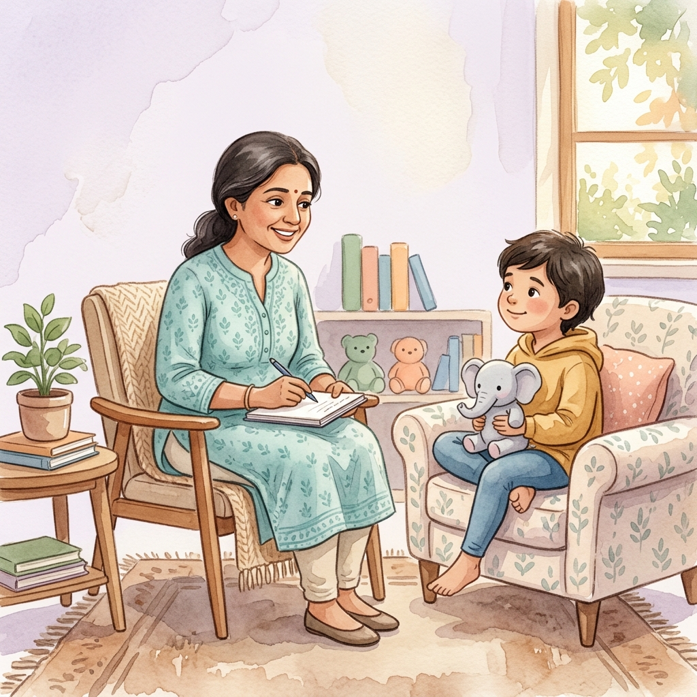

Every path is different. Find the one that resonates — or let us help you discover it.
Answer a few gentle questions. We'll suggest a starting point — not a diagnosis.
Every path is different — each service below is designed to speak for itself. Hover to explore.


A reflective mirror for the patterns and possibilities already within you — not fortune-telling.
✦ Hover the cards to reveal them
Learn More
A nurturing space where young minds can express, process, and grow.
Release deep-seated wounds and reclaim your inner peace through gentle, evidence-informed support.
Navigate the beautiful complexities of parenthood with expert, compassionate guidance.
Find your true professional calling and align your work with your inner purpose.
An integrative approach that treats mind, body, and spirit as one unified whole.